NSF Postdoctoral Fellow, Caltech
Incoming Assistant Professor, Cambridge
I am an NSF MSPRF postdoctoral fellow at the California Institute of Technology in the Department of Computing and Mathematical Sciences working with Prof. Andrew Stuart.
I received my PhD from the Massachusetts Institute of Technology (MIT) in 2024 in the Department of Mathematics co-advised by Prof. Philippe Rigollet and Prof. Jörn Dunkel funded by the NSF GRFP and MIT Presidential Fellowship. I was also part of the Interdisciplinary Doctoral Program in Statistics (IDPS) through the Institute for Data, Systems, and Society (IDSS). I received the Lawrence D. Brown PhD Student Award in 2025 from the Institute of Mathematical Statistics for my statistical work on the optimal transport Gromov-Wasserstein method and its applications to metabolomics.
Prior to MIT, I graduated in 2019 from the University of Washington with a Bachelor of Science in Mathematics and Computer Science, where I performed research in the Department of Applied Mathematics with Prof. Nathan Kutz.
I develop data-driven methods to learn laws and relationships in scientific data, using foundations of machine learning, statistical theory, numerical analysis, and mathematical modeling to design approaches that succeed in data-limited regimes and embody domain-specific inductive biases. My teaching philosophy is inspired by my research, showing students how to discover mathematical ideas in field-specific literature, translate them into well-posed theories, and bring these theories to life as numerical algorithms and reproducible code.
How do we develop physically faithful models when data are collected from disparate sources, sample-limited and noisy, or partial observations of a larger system?
The methodological and theoretical developments in these three thrusts are guided by my work in specific application domains including biochemistry, materials science, and fluid mechanics.
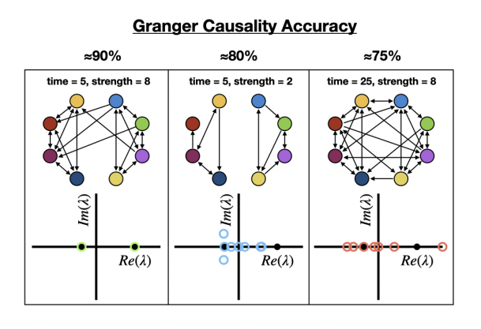
See projects
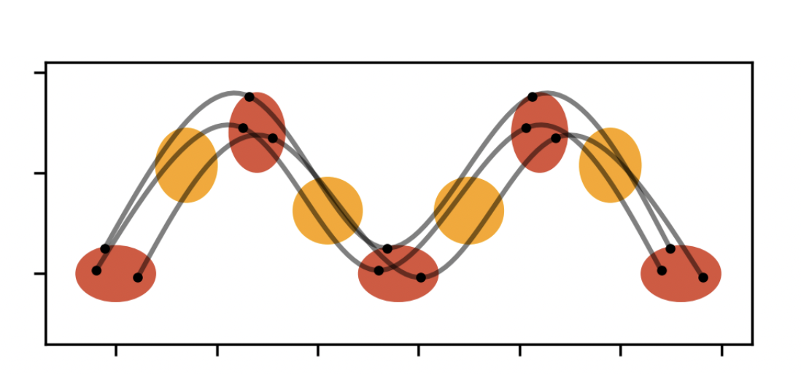
See projects
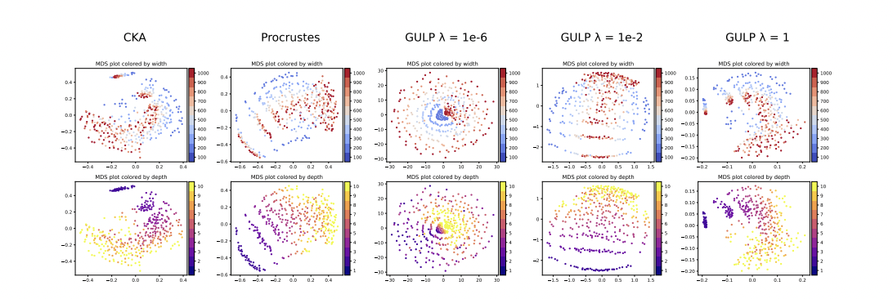
See projects
Math and Computer Science Double Major
NSF GRFP Graduate Student in Mathematics and Statistics
NSF MSPRF Postdoctoral Researcher
Oct 2026
Aug 2026
Apr 2026
Jun 2025
Sep 2024
Sep 2024
Jul 2024
Jun 2023
Dec 2021
Sep 2019
Sep 2019
Jun 2019
Matthew J. Colbrook, George Stepaniants, and Alex Townsend
Zenodo preprint, 2026Matthew J. Colbrook, Siavash Sadeghi, and George Stepaniants
arXiv preprint, 2026Matthew J. Colbrook, George Stepaniants, and Alex Townsend
arXiv preprint, 2026Matthew J. Colbrook and George Stepaniants
arXiv preprint, 2026Kaushik Bhattacharya, Lianghao Cao, George Stepaniants, Andrew M. Stuart, and Margaret Trautner
SMAI Journal of Computational Mathematics, 2026David Darrow and George Stepaniants
Communications of the AMS, 2026Yanjun Han, Philippe Rigollet, and George Stepaniants
SIMODS, 2025George Stepaniants, Alasdair D. Hastewell, Dominic J. Skinner, Jan F. Totz, and Jörn Dunkel
PRR, 2024Marie Breeur, George Stepaniants, Pekka Keski-Rahkonen, Philippe Rigollet, and Vivian Viallon
eLife, 2024George Stepaniants
JMLR, 2023Enric Boix-Adserà, Hannah Lawrence, George Stepaniants, and Philippe Rigollet
NeurIPS, 2022Sinho Chewi, Julien Clancy, Thibaut Le Gouic, Philippe Rigollet, George Stepaniants, and Austin Stromme
AISTATS, 2021George Stepaniants, Bingni W. Brunton, and J. Nathan Kutz
Physical Review E, 2020George Stepaniants
Undergraduate Academic Report, 2017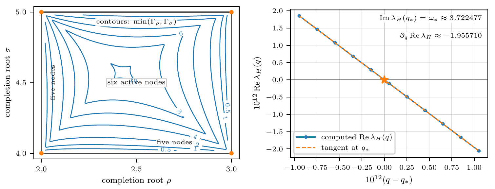
Figure 1. The threshold mechanism: the parameter rectangle of limiting two-cycles for restart length three (left), and a numerical reconstruction of the certified transverse Hopf crossing for restart length four (right).
View full figure from the research cardWe give a complete classification of Forsythe's conjecture by restart length for exact-arithmetic restarted conjugate gradients on finite-dimensional symmetric positive definite problems. For restart lengths two and three, every iteration either terminates or has even and odd normalized residual directions that converge separately. Combined with the classical result for restart length one, this establishes the conjecture precisely for restart lengths one, two, and three. For every restart length s of four or more, we construct a diagonal positive definite counterexample of dimension s + 4 whose even residual directions do not converge. The proof combines a double-orthogonality identity and low-degree fixed-set analysis with a computer-certified Hopf bifurcation, analytic periodic-orbit and shadowing arguments, and degree elevation.
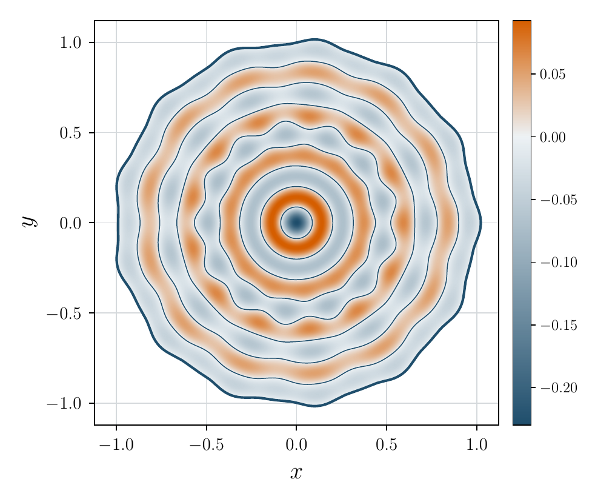
Figure 1. Numerical approximation to the sign-changing eigenfunction on the Berenstein counterexample domain.
View full figure from the research cardWe construct a noncircular, simply connected planar domain with an analytic boundary that supports a sign-changing Helmholtz eigenfunction with zero boundary values and a constant nonzero normal derivative. This gives a counterexample to the unrestricted planar Berenstein conjecture. The domain has thirteen-fold rotational symmetry and is not centrally symmetric. Building on the conformal and disk-polynomial framework developed for the Pompeiu and Schiffer problems, we formulate a coupled interior-boundary system on the unit disc. Bounds on the infinite-dimensional tail and an interval-arithmetic verification of a Newton-Kantorovich argument establish the existence of an exact solution near the computed approximation.
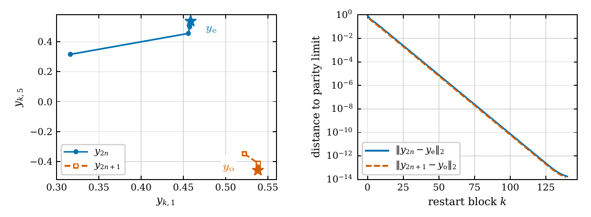
Figure 1. Two-step restarted conjugate gradients: residual trajectories and convergence to the even and odd limiting states.
View full figure from the research cardWe resolve the two-step case of Forsythe's 1968 conjecture on the asymptotic behavior of restarted conjugate gradients. For a symmetric positive definite system, restarting after every two iterations produces normalized residuals whose even and odd subsequences each approach a limit, provided the iteration does not terminate. Thus the residual directions asymptotically settle into a two-cycle.
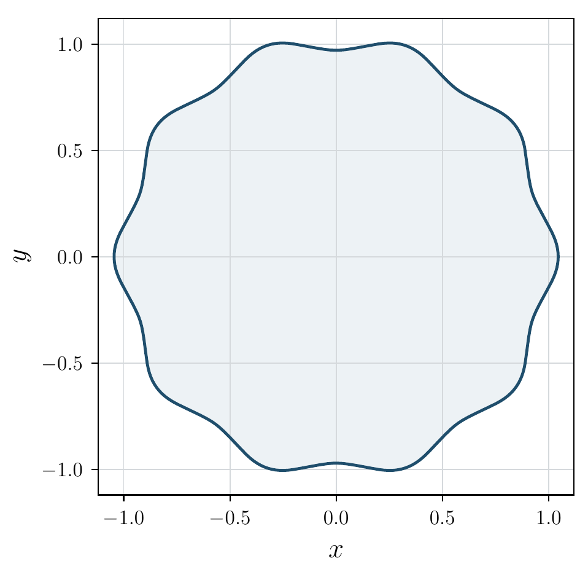
Figure 1. Boundary of the finite conformal approximation to the ten-lobed counterexample domain.
View full figure from the research cardWe give a computer-assisted construction of a noncircular, simply connected planar domain with an analytic boundary and a nonconstant Neumann eigenfunction that is constant on the boundary. The domain disproves the planar Schiffer conjecture and, through Green's identity, also the corresponding Pompeiu conjecture. Its boundary has ten-fold rotational symmetry and closely follows an explicitly specified polynomial conformal map. Transferring the problem to the unit disc yields an operator equation in a disk-polynomial basis. Rigorous coefficient estimates and control of the infinite-dimensional tails establish an exact solution near the numerical approximation.
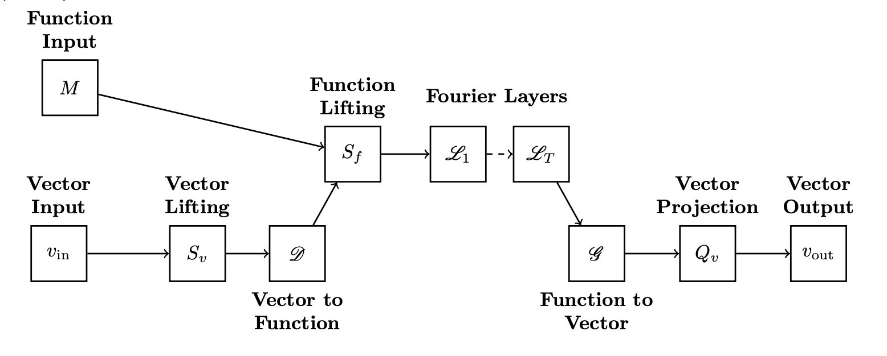
View full figure from the research cardWe propose and study a neural operator framework for learning memory- and material microstructure-dependent constitutive laws for heterogeneous materials. We work in the two-scale setting where homogenization theory provides a systematic approach to deriving macroscale constitutive laws, obviating the need to resolve complex microstructure repeatedly. However, the unit cell problems defining these constitutive models are typically not amenable to explicit evaluation. It is therefore of interest to learn constitutive models from data generated by the unit cell problem. Our proposed framework models homogenized constitutive laws with both memory- and microstructure-dependence through the use of Markovian recurrent and Fourier neural operators. The homogenization problem for Kelvin-Voigt viscoelastic materials is studied to provide firm theoretical foundations for our model. The theoretical properties of the cell problem in this Kelvin-Voigt setting motivate the proposed learning framework; and are also used to prove a universal approximation theorem for the learned macroscale constitutive model. Numerical experiments show that the proposed learning framework accurately learns memory- and microstructure-dependent viscoelastic and elasto-viscoplastic constitutive models, beyond the setting of the theory. Furthermore, we show that the learned constitutive models can be successfully deployed in macroscale simulation of material deformation for different microstructures without retraining.
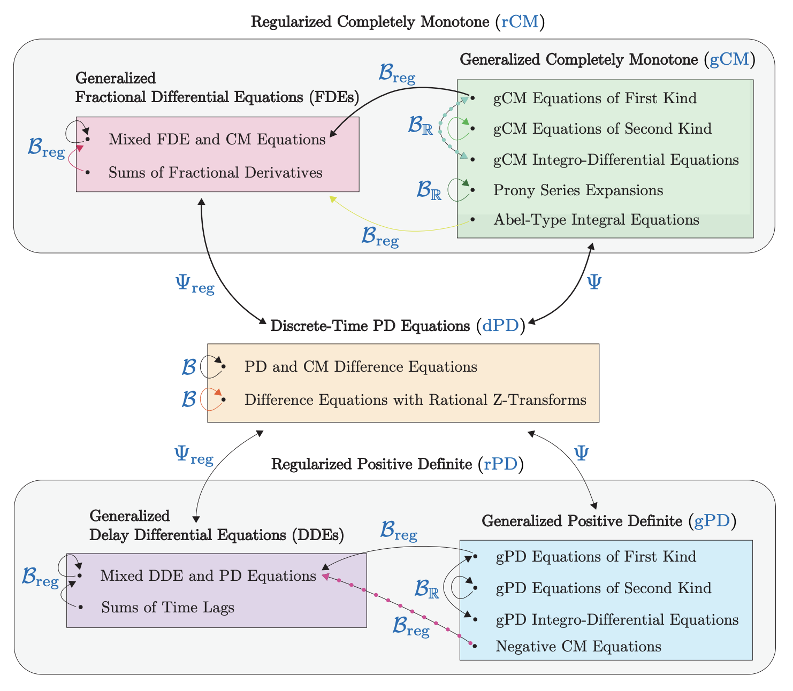
View full figure from the research cardThis work aims to bridge the gap between pure and applied research on scalar, linear Volterra equations by examining five major classes: integral and integro-differential equations with completely monotone kernels (viscoelastic models); equations with positive definite kernels (partially observed quantum systems); difference equations with discrete, positive definite kernels; a generalized class of delay differential equations; and a generalized class of fractional differential equations. We develop a general, spectral theory that provides a system of correspondences between these disparate domains. As a result, we see how 'interconversion' (operator inversion) arises as a natural, continuous involution within each class, yielding a plethora of novel formulas for analytical solutions of such equations. This spectral theory unifies and extends existing results in viscoelasticity, signal processing, and analysis. It also introduces a geometric construction of the regularized Hilbert transform, revealing a fundamental connection to fractional and delay differential equations. Finally, it offers a practical toolbox for Volterra equations of all classes, reducing many to pen-and-paper calculations and introducing a powerful spectral approach for general Volterra equations based on rational approximation.
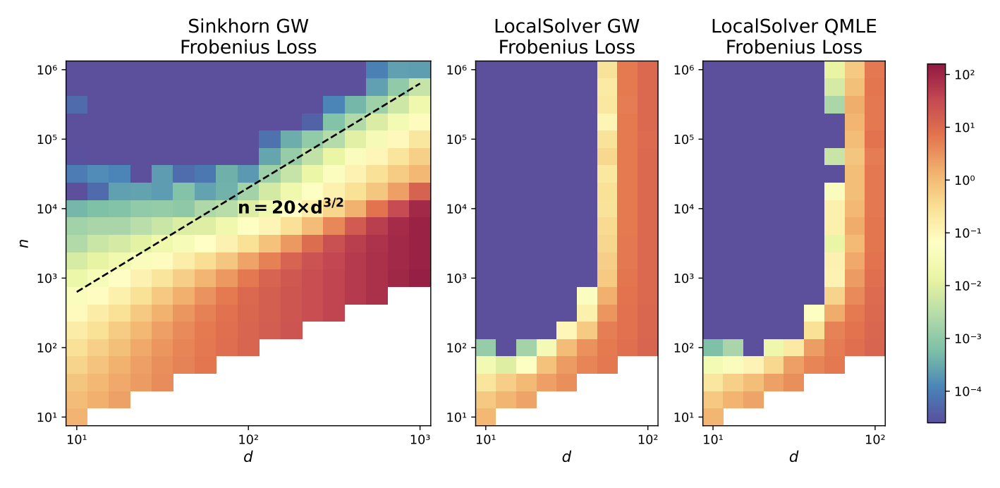
View full figure from the research cardFeature alignment methods are used in many scientific disciplines for data pooling, annotation, and comparison. As an instance of a permutation learning problem, feature alignment presents significant statistical and computational challenges. In this work, we propose the covariance alignment model to study and compare various alignment methods and establish a minimax lower bound for covariance alignment that has a non-standard dimension scaling because of the presence of a nuisance parameter. This lower bound is in fact minimax optimal and is achieved by a natural quasi MLE. However, this estimator involves a search over all permutations which is computationally infeasible even when the problem has moderate size. To overcome this limitation, we show that the celebrated Gromov-Wasserstein algorithm from optimal transport which is more amenable to fast implementation even on large-scale problems is also minimax optimal. These results give the first statistical justification for the deployment of the Gromov-Wasserstein algorithm in practice.
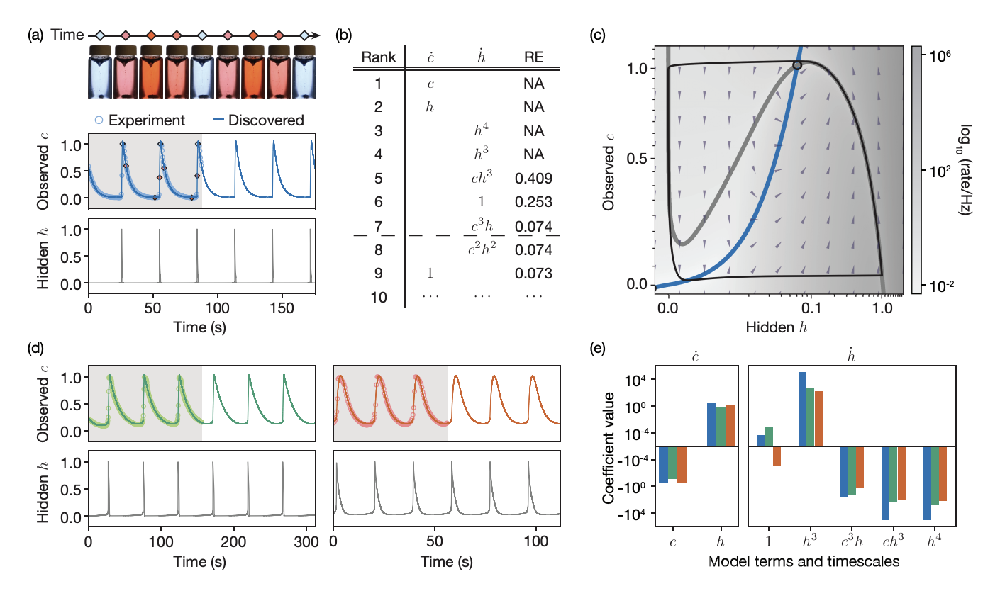
View full figure from the research cardDespite rapid progress in data acquisition techniques, many complex physical, chemical, and biological systems remain only partially observable, thus posing the challenge to identify valid theoretical models and estimate their parameters from an incomplete set of experimentally accessible time series. Here, we combine sensitivity methods and ranked-choice model selection to construct an automated hidden dynamics inference framework that can discover predictive nonlinear dynamical models for both observable and latent variables from noise-corrupted incomplete data in oscillatory and chaotic systems. After validating the framework for prototypical FitzHugh-Nagumo oscillations, we demonstrate its applicability to experimental data from squid neuron activity measurements and Belousov-Zhabotinsky reactions, as well as to the Lorenz system in the chaotic regime.
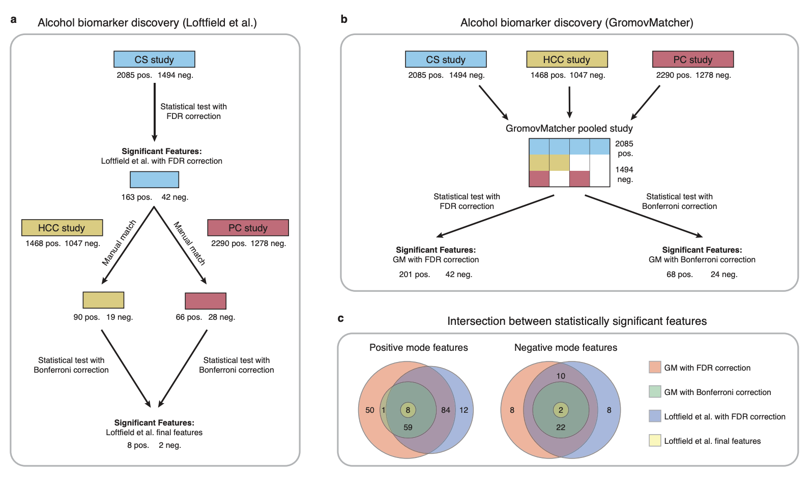
View full figure from the research cardUntargeted metabolomic profiling through liquid chromatography-mass spectrometry (LC-MS) measures a vast array of metabolites within biospecimens, advancing drug development, disease diagnosis, and risk prediction. However, the low throughput of LC-MS poses a major challenge for biomarker discovery, annotation, and experimental comparison, necessitating the merging of multiple datasets. Current data pooling methods encounter practical limitations due to their vulnerability to data variations and hyperparameter dependence. Here, we introduce GromovMatcher, a flexible and user-friendly algorithm that automatically combines LC-MS datasets using optimal transport. By capitalizing on feature intensity correlation structures, GromovMatcher delivers superior alignment accuracy and robustness compared to existing approaches. This algorithm scales to thousands of features requiring minimal hyperparameter tuning. Manually curated datasets for validating alignment algorithms are limited in the field of untargeted metabolomics, and hence we develop a dataset split procedure to generate pairs of validation datasets to test the alignments produced by GromovMatcher and other methods. Applying our method to experimental patient studies of liver and pancreatic cancer, we discover shared metabolic features related to patient alcohol intake, demonstrating how GromovMatcher facilitates the search for biomarkers associated with lifestyle risk factors linked to several cancer types.
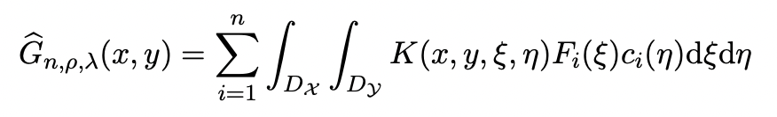
View full figure from the research cardWe propose a new data-driven approach for learning the fundamental solutions (Green's functions) of various linear partial differential equations (PDEs) given sample pairs of input-output functions. Building off the theory of functional linear regression (FLR), we estimate the best-fit Green's function and bias term of the fundamental solution in a reproducing kernel Hilbert space (RKHS) which allows us to regularize their smoothness and impose various structural constraints. We derive a general representer theorem for operator RKHSs to approximate the original infinite-dimensional regression problem by a finite-dimensional one, reducing the search space to a parametric class of Green's functions. In order to study the prediction error of our Green's function estimator, we extend prior results on FLR with scalar outputs to the case with functional outputs. Finally, we demonstrate our method on several linear PDEs including the Poisson, Helmholtz, Schrödinger, Fokker-Planck, and heat equation. We highlight its robustness to noise as well as its ability to generalize to new data with varying degrees of smoothness and mesh discretization without any additional training.
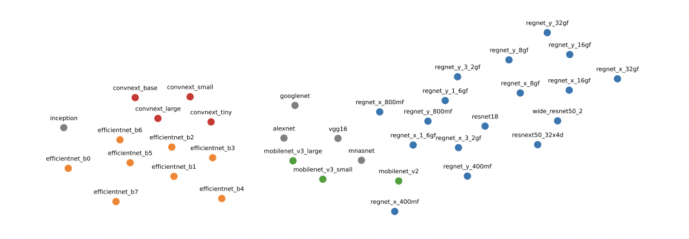
View full figure from the research cardComparing the representations learned by different neural networks has recently emerged as a key tool to understand various architectures and ultimately optimize them. In this work, we introduce GULP, a family of distance measures between representations that is explicitly motivated by downstream predictive tasks. By construction, GULP provides uniform control over the difference in prediction performance between two representations, with respect to regularized linear prediction tasks. Moreover, it satisfies several desirable structural properties, such as the triangle inequality and invariance under orthogonal transformations, and thus lends itself to data embedding and visualization. We extensively evaluate GULP relative to other methods, and demonstrate that it correctly differentiates between architecture families, converges over the course of training, and captures generalization performance on downstream linear tasks.
We propose a new method for smoothly interpolating probability measures using the geometry of optimal transport. To that end, we reduce this problem to the classical Euclidean setting, allowing us to directly leverage the extensive toolbox of spline interpolation. Unlike previous approaches to measure-valued splines, our interpolated curves (i) have a clear interpretation as governing particle flows, which is natural for applications, and (ii) come with the first approximation guarantees on Wasserstein space. Finally, we demonstrate the broad applicability of our interpolation methodology by fitting surfaces of measures using thin-plate splines.
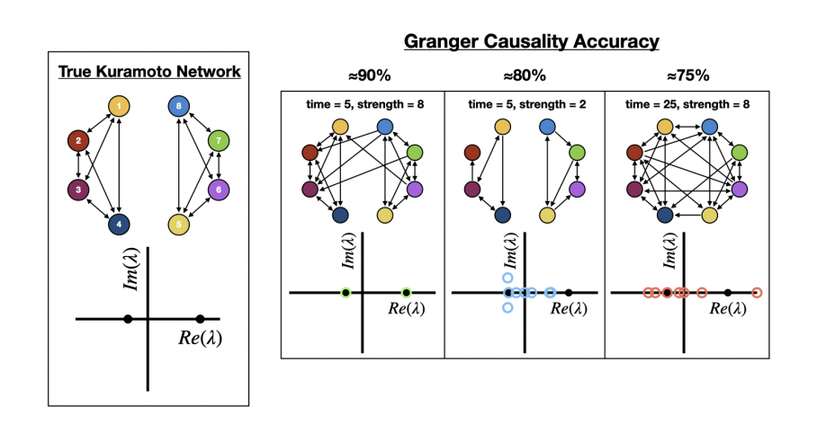
View full figure from the research cardInferring causal relations from time series measurements is an ill-posed mathematical problem, where typically an infinite number of potential solutions can reproduce the given data. We explore in depth a strategy to disambiguate between possible underlying causal networks by perturbing the network, where the forcings are either targeted or applied at random. The resulting transient dynamics provide the critical information necessary to infer causality. Two methods are shown to provide accurate causal reconstructions: Granger causality (GC) with perturbations, and our proposed perturbation cascade inference (PCI). Perturbed GC is capable of inferring smaller networks under low coupling strength regimes. Our proposed PCI method demonstrated consistently strong performance in inferring causal relations for small (2-5 node) and large (10-20 node) networks, with both linear and nonlinear dynamics. Thus, the ability to apply a large and diverse set of perturbations to the network is critical for successfully and accurately determining causal relations and disambiguating between various viable networks.
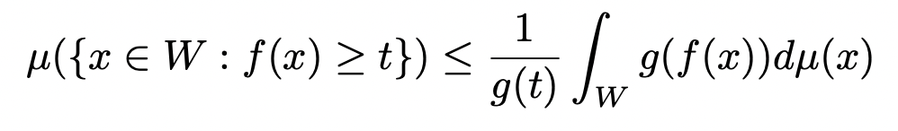
View full figure from the research cardThis paper presents Bernstein's probabilistic proof of the Weierstrass Approximation Theorem. It develops the required foundations in measure theory, Lebesgue integration, probability distributions, and Chebyshev's inequality before applying them to polynomial approximation.
My goal as an educator is to teach students how to work on the interface of different disciplines and leverage tools from mathematical theory in physics, life sciences, probability theory, and statistics to solve their problems. My teaching philosophy is to train students to
I am dedicated to mentoring and student outreach, and am taking important steps in education, research mentorship, and outreach in academia as well as in my local communities. I continue to expand my outreach and service in communities that historically have had less access to education in mathematics and science.
Summer 2025
A Signature-Based Approach for System Identification and Control: Applications and theory for signature transform methods in open-loop control of dynamical systems.
Summer 2025
A Study of Network Inference Methods: Information-theoretic and deep learning methods for inference of networked dynamical systems.
Fall 2024
Fall 2024
Mentored research reading and project in data-driven dynamical systems inference algorithms based on the method of characteristics.
Summer 2023 - Fall 2023
Modeling International Trade and Tariffs: Study of large trade and tariffs dataset across 200 world countries, investigating the use of spectral and graph wavelet decompositions for analysis of temporal trade network data.
Summer 2023
Guided reading of two undergraduate students in the graduate dynamical systems text "Stability, Instability and Chaos" by Paul Glendinning over the course of the summer. Prepared students to present their knowledge of the text in a final presentation at the end of summer.
Summer 2023
Guided research readings with two MIT undergraduates on optimal transport and adjoint methods for inference of stochastic dynamical systems and networked dynamical systems.
Fall 2021 - Spring 2022
Optimal Transport for Protein Folding: Studying how optimal transport and Gromov-Wasserstein methods can be used to predict the three-dimensional structure of proteins.
2015 - 2019
2015 - 2016
2025 - 2026
2025
2025
2025
2020
2015 - 2019
2015 - 2019
2024 - Present
2020 - Present
2019 - Present
Dynamical systems are a ubiquitous tool for modeling time-dependent processes in science and engineering. Progress in machine learning methods in the past two decades has been tremendous, giving rise to the field of scientific machine learning which combines data-driven methods with physical modeling techniques. This course covers pivotal data-driven algorithms and model architectures for more accurate model inference, forecasting, and analysis of dynamical data, with special focus on partially observed systems. Topics include system identification, Koopman theory, sparse model inference, neural ODEs, signature transforms, autoregressive models, Volterra equations, Mori-Zwanzig formalism, and higher-order models.
Two weekly 1.5 hour classes with 30+ students, with final presentations and projects. Designed all course content and lectures and graded final projects.
Spring 2022 | MITThe class 18.032 is centered around ordinary differential equations with more emphasis on theory than 18.03. Topics include first and higher-order ODEs, existence and uniqueness of solutions, Picard iterations, Euler schemes, control and comparison of solutions, maximal solutions, dependence on initial conditions, Grönwall's Lemma, multivariable ODEs, and fixed point stability.
Two weekly 1 hour recitations with 16 students, including grading of homeworks/finals and proctoring final exams.
Fall 2021 | MITThe class 18.600 is an introductory probability theory course. Topics include probability spaces, random variables, distribution functions, standard discrete and continuous distributions, conditional probability, Bayes theorem, joint distributions, Chebyshev inequality, the law of large numbers, and the central limit theorem.
Two weekly 1 hour recitations with 40 students, including grading of homeworks and finals.
(To Begin) Oct 2026
Assistant Professor in Mathematics of Information
Department of Applied Mathematics and Theoretical Physics (DAMTP)
(To Begin) Oct 2026
Courant Institute School of Mathematics, Computing, and Data Science
Sep 2024 - Present
NSF Mathematical Sciences Postdoctoral Research Fellow (MSPRF)
Department of Computing and Mathematical Sciences (CMS)
Postdoctoral Advisor: Andrew M. Stuart
Sep 2019 - Jun 2024
Department of Mathematics and Institute for Data, Systems, and Society (IDSS)
GPA: 4.9/5.0
Advisors: Philippe Rigollet and Jörn Dunkel
Thesis: Inference from limited observations in statistical, dynamical, and functional problems
Sep 2015 - Jun 2019
Department of Mathematics and Department of Computer Science (double major)
GPA: 3.87/4.00
Advisors: Nathan Kutz and Bing Brunton
Research Topic: Inferring causal networks of dynamical systems through transient dynamics and perturbation
Aug 2026
Apr 2026
Sep 2024 - Current
Sep 2024
Jun 2019 - Jun 2024
Dec 2023
Jun 2023
Sep 2019 - Jun 2020
Jun 2019
Jun 2019
Sep 2015 - Jun 2019
Sep 2015
See also my Google Scholar and ORCID.
David Darrow, George Stepaniants, and Chris Camaño. “SIEVE: Spectral integral transforms, poly-exponential approximants, and Volterra equations.”
Jul 2018 - Aug 2018
Undergraduate Researcher in Mycofluidics Lab
Worked in Professor Marcus Roper's lab on imaging of fungal cells in Neurospora and Ashbya fungal species. Collected data on nuclear division of these multinucleated cells using 3D imaging algorithms and performed data analysis on nuclear spacing and mixing within the cell. Discovered that genetically incompatible fungal strains fuse together when exposed to environmental stress. We are working on a paper that relies on the research findings and imaging algorithms I developed at UCLA.
Jun 2017 - Sep 2017
Full Stack Development and Data Analysis/Visualization
Collaborated with researchers and built a system which optimized hyperparameter selection in various neural network experiments run in the company. I was responsible for experiment design decisions and execution of these experiments on a Google cluster. My platform significantly simplified the experimentation process and reduced runtime by a factor of two.
Aug 2016 - Dec 2016
Parser Accuracy Scoring
Compared ABBYY's parser efficiency and output to that of MaltParser. Created scripts in Java to read parser output from CoNLL-X data files and scored them using unlabeled and labeled attachment scores (UAS and LAS). Used Excel for visualization and graphing.
Jun 2016 - Aug 2016
Imaging Algorithms for Automated Brain Slice Imaging
Worked in the Neuroscience Pain Research Unit at Pfizer. Studied how various drugs help regenerate healthy cells damaged by neurodegenerative diseases, especially Parkinson's. Used image analysis algorithms, particularly 3D Watershed Segmentation, to quantify the percentage of regenerated healthy cells after treatment. My automated imaging pipeline was used by researchers to quantify hundreds of drug profiles and reduced the runtime of their image analysis code by 10 times.
92%
90%
85%
80%
Image Analysis
AutoDiff (PyTorch)
Cluster Computing
Numerical Analysis
Data Visualization
Adobe Illustrator
Fill out the contact form below to send me an email.